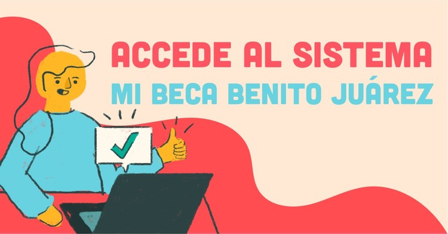
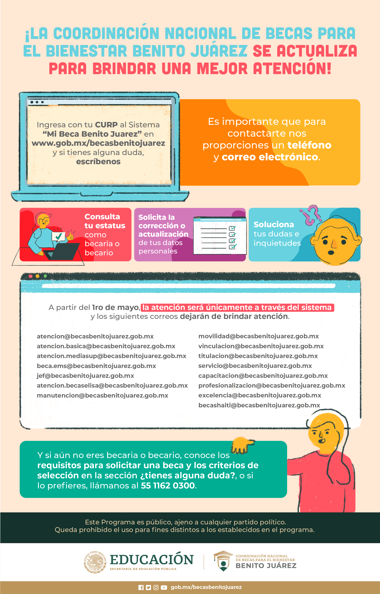

"La educación es fundamental para la felicidad social, es el principio en el que descansan la libertad y el engrandecimiento de los pueblos."-Benito Juárez
BLOG

Conoce el nuevo sistema Mi Beca Benito Juárez

Conoce el nuevo sistema Mi Beca Benito Juárez
La legalidad, veracidad y la calidad de la información es estricta responsabilidad de la dependencia, entidad o empresa productiva del Estado que la proporcionó en virtud de sus atribuciones y/o facultades normativas.